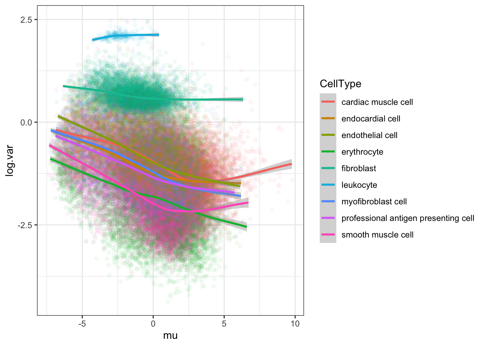
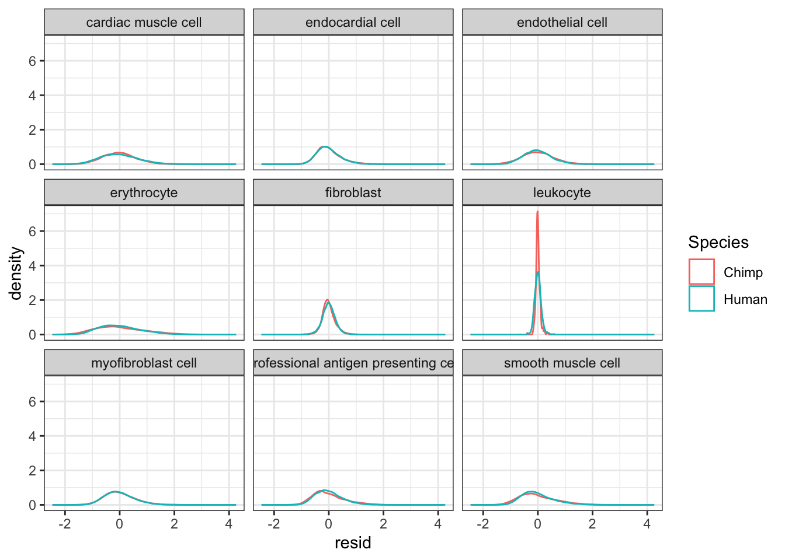

ResponseToReviewer_Point11
Last updated: 2020-09-09
Checks: 6 1
Knit directory: Comparative_eQTL/analysis/
This reproducible R Markdown analysis was created with workflowr (version 1.5.0). The Checks tab describes the reproducibility checks that were applied when the results were created. The Past versions tab lists the development history.
The R Markdown is untracked by Git. To know which version of the R Markdown file created these results, you’ll want to first commit it to the Git repo. If you’re still working on the analysis, you can ignore this warning. When you’re finished, you can run wflow_publish to commit the R Markdown file and build the HTML.
Great job! The global environment was empty. Objects defined in the global environment can affect the analysis in your R Markdown file in unknown ways. For reproduciblity it’s best to always run the code in an empty environment.
The command set.seed(20190319) was run prior to running the code in the R Markdown file. Setting a seed ensures that any results that rely on randomness, e.g. subsampling or permutations, are reproducible.
Great job! Recording the operating system, R version, and package versions is critical for reproducibility.
Nice! There were no cached chunks for this analysis, so you can be confident that you successfully produced the results during this run.
Great job! Using relative paths to the files within your workflowr project makes it easier to run your code on other machines.
Great! You are using Git for version control. Tracking code development and connecting the code version to the results is critical for reproducibility. The version displayed above was the version of the Git repository at the time these results were generated.
Note that you need to be careful to ensure that all relevant files for the analysis have been committed to Git prior to generating the results (you can use wflow_publish or wflow_git_commit). workflowr only checks the R Markdown file, but you know if there are other scripts or data files that it depends on. Below is the status of the Git repository when the results were generated:
Ignored files:
Ignored: .DS_Store
Ignored: .Rhistory
Ignored: .Rproj.user/
Ignored: WorkingManuscript.zip
Ignored: WorkingManuscript/
Ignored: analysis/.DS_Store
Ignored: analysis/.Rhistory
Ignored: analysis_temp/.DS_Store
Ignored: big_data/
Ignored: code/.DS_Store
Ignored: code/snakemake_workflow/.DS_Store
Ignored: code/snakemake_workflow/.Rhistory
Ignored: data/.DS_Store
Ignored: data/PastAnalysesDataToKeep/.DS_Store
Ignored: figures/
Ignored: output/.DS_Store
Untracked files:
Untracked: analysis/20200907_Response_OriginalComments.Rmd
Untracked: analysis/20200907_Response_Point_11.Rmd
Unstaged changes:
Modified: analysis_temp/Ted_vignette.R
Note that any generated files, e.g. HTML, png, CSS, etc., are not included in this status report because it is ok for generated content to have uncommitted changes.
There are no past versions. Publish this analysis with wflow_publish() to start tracking its development.
Original reviewer point:
Have the authors tried estimating dispersion on top of what is expected based on differences in cell type? There are several strategies that might work for this: There are new strategies for estimating a posterior of cell type specific expression from a bulk sample, conditional on scRNA-seq data as prior information (Chu and Danko, bioRxiv, 2020). These cell type specific expression estimates could then be analyzed for dispersion. Alternatively, it may also work to regress the estimated proportion of each cell type out of the dispersion estimates. While there are certainly a lot of pitfalls with using these strategies, especially in the setting shown here (all of this would work better if there were species matched reference data), they might provide an avenue for depleting the contribution of cell type differences from dispersion estimates.
Here I will use the Chu and Danko methodology (“TED”, or “BayesPrism”, see https://github.com/Danko-Lab/TED) to estimate cell type specific expression estimates for each individual, and then estimate a cell type specific dispersion estimate. As the reviewer notes, there a lot of pitfalls with this strategy. Really, in the absence of scRNA-seq data (and a human scRNA-seq reference), there is only so much we can gain I think. But still worth a try.
library(TED)
library(tidyverse)
library(biomaRt)
library(Seurat)
library(gplots)
source("../code/CustomFunctions.R")
library(knitr)
library(scales)This block references a file that I keep on my local computer, that is not reproducible from the snakemake. This rds file references a seurat object I created from publicaly available mouse scRNA-seq data (Tabula Muris) using this Rscript.
Heart.seur = readRDS("../big_data/TabMuris_heart_seurat.rds")Some other data to read in… This includes the bulk RNA-seq count data from this study (39 human, 39 chimp), and some other necessary data to convert mouse gene names to human, etc.
#read in table of overdispersion, dispersion, mean expresion estimates
Dispersion <- read.delim('../output/OverdispersionEstimatesFromChimp.txt')
Dispersion$MeanDispersion <- (Dispersion$Chimp.Residual + Dispersion$Human.Residual)/2
CountTableChimpFile <- '../output/PowerAnalysisFullCountTable.Chimp.subread.txt.gz'
CountTableHumanFile <- '../output/PowerAnalysisFullCountTable.Human.subread.txt.gz'
OutputDE <- '../output/Final/TableS2.tab'
DropFileName <- '../data/DE_SamplesToDrop.txt'
DropFile <- read.delim(DropFileName, sep='\t', col.names = c("Sample", "Species"), stringsAsFactors = F)
HumanSamplesToDrop <- DropFile %>% filter(Species=="Human") %>% pull(Sample)
ChimpSamplesToDrop <- DropFile %>% filter(Species=="Chimp") %>% pull(Sample)
DE.results <- read.delim(OutputDE, sep='\t', stringsAsFactors = F)
GeneListForOverdispersionCalculation <- DE.results$Ensembl_geneID
CountTables <- GetCountTables(CountTableChimpFile,
CountTableHumanFile,
0, GeneListForOverdispersionCalculation, ChimpSampleDrop=ChimpSamplesToDrop, HumanSampleDrop = HumanSamplesToDrop)
human = useMart("ensembl", dataset = "hsapiens_gene_ensembl")
mouse = useMart("ensembl", dataset = "mmusculus_gene_ensembl")
MouseGenes = rownames(Heart.seur)
genes = getLDS(attributes = c("mgi_symbol"), filters = "mgi_symbol", values = MouseGenes ,mart = mouse, attributesL = c("ensembl_gene_id", "chromosome_name", "start_position", "mmusculus_homolog_orthology_type"), martL = human, uniqueRows=T)
# Get list of one to one orthologs in both tabula muris and our dataset for further analysis
one2one_HumanMouseOrthologs <- genes %>%
filter(Mouse.homology.type=="ortholog_one2one") %>%
filter(Gene.stable.ID %in% Dispersion$gene) %>%
dplyr::select(MGI.symbol, Gene.stable.ID) %>%
distinct(MGI.symbol, .keep_all = T)Now prepare input data from run.Ted function:
CellTypes <- data.frame(Cell.ID=colnames(Heart.seur@assays$RNA), CellType=Heart.seur@meta.data$Cell.ontology.class)
scCountTable.Filtered <- Heart.seur@assays$RNA[one2one_HumanMouseOrthologs$MGI.symbol,] %>%
as.matrix() %>%
as.data.frame() %>%
rownames_to_column() %>%
inner_join(one2one_HumanMouseOrthologs, by=c("rowname"="MGI.symbol")) %>%
dplyr::select(-rowname) %>%
column_to_rownames("Gene.stable.ID") %>% t() %>%
as.data.frame() %>%
rownames_to_column("Cell.ID") %>%
inner_join(CellTypes, by="Cell.ID") %>%
filter(!CellType == "unassigned cell type") %>%
dplyr::select(-CellType) %>%
column_to_rownames("Cell.ID") %>% t()
scCountTable.Filtered[1:10,1:10] %>% kable()| A1.B000412.3_56_F.1.1 | A1.B000633.3_56_F.1.1 | A1.B002423.3_39_F.1.1 | A1.B002427.3_39_F.1.1 | A1.B002428.3_38_F.1.1 | A1.MAA000398.3_9_M.1.1 | A1.MAA000400.3_8_M.1.1 | A1.MAA000898.3_11_M.1.1 | A1.MAA000899.3_10_M.1.1 | A1.MAA000903.3_11_M.1.1 | |
|---|---|---|---|---|---|---|---|---|---|---|
| ENSG00000265491 | 295 | 0 | 516 | 0 | 0 | 0 | 59 | 0 | 135 | 0 |
| ENSG00000265972 | 676 | 555 | 0 | 1 | 82 | 414 | 0 | 1068 | 299 | 467 |
| ENSG00000271601 | 0 | 0 | 0 | 0 | 0 | 0 | 0 | 0 | 0 | 0 |
| ENSG00000272031 | 0 | 0 | 0 | 0 | 0 | 0 | 0 | 0 | 0 | 0 |
| ENSG00000134250 | 0 | 48 | 181 | 1 | 36 | 12 | 269 | 583 | 12 | 828 |
| ENSG00000131788 | 0 | 0 | 0 | 0 | 0 | 0 | 0 | 13 | 14 | 0 |
| ENSG00000186141 | 0 | 0 | 0 | 0 | 0 | 0 | 0 | 0 | 0 | 305 |
| ENSG00000186364 | 0 | 0 | 0 | 0 | 0 | 0 | 0 | 0 | 0 | 0 |
| ENSG00000143127 | 0 | 0 | 0 | 0 | 0 | 0 | 0 | 0 | 0 | 0 |
| ENSG00000198483 | 0 | 0 | 0 | 0 | 0 | 0 | 0 | 137 | 0 | 0 |
CellTypeVector <- CellTypes %>%
filter(!CellType == "unassigned cell type") %>% pull(CellType) %>% as.character()
head(CellTypeVector)[1] "endothelial cell" "leukocyte" "fibroblast"
[4] "myofibroblast cell" "endocardial cell" "fibroblast" Bulk.CountTable <- cbind(CountTables$Chimp$Counts, CountTables$Human$Counts) %>%
rownames_to_column() %>%
inner_join(one2one_HumanMouseOrthologs, by=c("rowname"="Gene.stable.ID")) %>%
dplyr::select(-MGI.symbol) %>%
column_to_rownames()
Bulk.CountTable[1:10,1:10] %>% kable()| C.4x0519 | C.4x373 | C.476 | C.4x0025 | C.438 | C.462 | C.4X0354 | C.503 | C.317 | C.623 | |
|---|---|---|---|---|---|---|---|---|---|---|
| ENSG00000186891 | 46 | 73 | 20 | 28 | 4 | 11 | 98 | 13 | 11 | 3 |
| ENSG00000186827 | 274 | 393 | 313 | 397 | 173 | 128 | 975 | 236 | 307 | 84 |
| ENSG00000078808 | 5967 | 1931 | 7637 | 3892 | 2957 | 3745 | 1189 | 5857 | 4306 | 3704 |
| ENSG00000176022 | 1097 | 402 | 1574 | 1333 | 955 | 1235 | 416 | 1087 | 745 | 640 |
| ENSG00000160087 | 761 | 283 | 1153 | 776 | 471 | 610 | 275 | 920 | 547 | 604 |
| ENSG00000131584 | 2587 | 1537 | 3646 | 2546 | 1755 | 1323 | 4585 | 2250 | 1484 | 1872 |
| ENSG00000169972 | 282 | 78 | 396 | 257 | 209 | 282 | 111 | 243 | 141 | 252 |
| ENSG00000169962 | 320 | 111 | 366 | 80 | 178 | 145 | 269 | 416 | 237 | 107 |
| ENSG00000107404 | 7019 | 3600 | 11211 | 7397 | 5731 | 4670 | 3942 | 9779 | 5566 | 6768 |
| ENSG00000162576 | 3701 | 1059 | 1384 | 2114 | 1426 | 2418 | 1242 | 1360 | 2221 | 1948 |
Now, use run.Ted function to estimate cell type porportions and also per individual expression within each cell type. In this code block, which I have run before knitting the Rmarkdown, I will also save the results to an RDS file that I will read in the next code block, so I don’t have to re-run this time consuming function when I want to knit the Rmarkdown.
Ted.results <- run.Ted(t(scCountTable.Filtered), t(Bulk.CountTable), pheno.labels = CellTypeVector, input.type = "scRNA", n.cores = 1)
saveRDS(Ted.results, file = "../big_data/TedResults.rds")Now read in the ted results.
Ted.results <- readRDS("../big_data/TedResults.rds")
Ted.Expression.Per.CellType <- Ted.results$res$first.gibbs.res$Znkg #mean reads in each cell type
Ted.CellTypePorportions <- Ted.results$res$first.gibbs.res$theta.merged #cell fractionOk, now let’s compare the cell type porportions to CIBERSORT results…
#Ted cell type porportions table
Ted.CellTypePorportions %>% head() %>% kable()| endothelial cell | leukocyte | fibroblast | myofibroblast cell | endocardial cell | cardiac muscle cell | professional antigen presenting cell | erythrocyte | smooth muscle cell | |
|---|---|---|---|---|---|---|---|---|---|
| C.4x0519 | 0.0655604 | 0.0015653 | 0.0279680 | 0.0863701 | 0.0335372 | 0.5969150 | 0.0281230 | 0.1059831 | 0.0539779 |
| C.4x373 | 0.0729209 | 0.0000807 | 0.0353951 | 0.0581507 | 0.0102430 | 0.5956729 | 0.0252973 | 0.0969409 | 0.1052985 |
| C.476 | 0.0443883 | 0.0000164 | 0.0007314 | 0.0427403 | 0.0154651 | 0.7444661 | 0.0230774 | 0.0774483 | 0.0516668 |
| C.4x0025 | 0.0840676 | 0.0002683 | 0.0140482 | 0.1144108 | 0.0322334 | 0.5566394 | 0.0434807 | 0.1087926 | 0.0460590 |
| C.438 | 0.0438903 | 0.0000171 | 0.0061195 | 0.0420949 | 0.0162850 | 0.7467382 | 0.0235200 | 0.0658731 | 0.0554619 |
| C.462 | 0.0661200 | 0.0005401 | 0.0194387 | 0.0645938 | 0.0215091 | 0.6691649 | 0.0268254 | 0.0845318 | 0.0472763 |
Ted.CellTypePorportions.df <- Ted.CellTypePorportions %>% as.data.frame() %>%
rownames_to_column("Input.Sample") %>%
select_all(~gsub("\\s+", ".", .)) %>%
arrange(cardiac.muscle.cell) %>%
gather(key="cell.type", value="percent", -Input.Sample) %>%
mutate(Species = case_when(str_detect(Input.Sample, "C.") ~ "Chimp",
str_detect(Input.Sample, "H.") ~ "Human"))
#Ted cell type porportions as plot
ggplot(Ted.CellTypePorportions.df, aes(x=reorder(Input.Sample, percent, FUN=max), y=percent, fill=cell.type)) +
geom_bar(stat="identity") +
scale_y_continuous(limits = c(-0.001,1.001), expand = c(0, 0)) +
facet_grid(~Species, scales="free_x", space="free_x") +
theme_bw() +
theme(axis.title.x=element_blank(),
axis.text.x=element_blank(),
axis.ticks.x=element_blank())#CIBERSORT cell type porportions
CIBERSORT <- read.table("../data/CIBERSORT.Output_Job2.csv", sep=',', header=T) %>%
arrange(cardiac.muscle.cell) %>%
gather(key="cell.type", value="percent", -Input.Sample, -P.value, -Pearson.Correlation, -RMSE) %>%
mutate(Species = case_when(str_detect(Input.Sample, "C.") ~ "Chimp",
str_detect(Input.Sample, "H.") ~ "Human"))
#As a plot...
ggplot(CIBERSORT, aes(x=reorder(Input.Sample, percent, FUN=max), y=percent, fill=cell.type)) +
geom_bar(stat="identity") +
scale_y_continuous(limits = c(-0.001,1.001), expand = c(0, 0)) +
facet_grid(~Species, scales="free_x", space="free_x") +
theme_bw() +
theme(axis.title.x=element_blank(),
axis.text.x=element_blank(),
axis.ticks.x=element_blank())#Compare CIBERSORT and TED cell porportions
inner_join(CIBERSORT, Ted.CellTypePorportions.df, by=c("Input.Sample", "cell.type"), suffix=c(".CIBERSORT", ".TED")) %>%
ggplot(aes(x=percent.TED, y=percent.CIBERSORT, color=cell.type)) +
geom_point(aes(shape=Species.TED)) +
theme_bw()inner_join(CIBERSORT, Ted.CellTypePorportions.df, by=c("Input.Sample", "cell.type"), suffix=c(".CIBERSORT", ".TED")) %>%
ggplot(aes(x=percent.TED, y=percent.CIBERSORT, color=cell.type)) +
geom_point(aes(shape=Species.TED)) +
facet_wrap(~cell.type, scales = "free") +
theme_bw()Ok, some reasonable agreement between the cell type porportions for some cell types, but not for others (particularly the less prevalent cell types).
Ok, now let’s explore TED’s output for expression per cell type per individual, and consider estimating dispersion in a cell type specific fashion in a way similar to the bulk dispersion estimates.
Ted.Expression.Per.CellType %>% dim()[1] 79 9 10001dimnames(Ted.Expression.Per.CellType)[[1]] <- rownames(Ted.results$res$first.gibbs.res$theta.merged)
dimnames(Ted.Expression.Per.CellType)[[2]] <- colnames(Ted.results$res$first.gibbs.res$theta.merged)
dimnames(Ted.Expression.Per.CellType)[[3]] <- colnames(Ted.results$res$first.gibbs.res$Zkg)
Ted.Expression.Per.CellType.df <- Ted.Expression.Per.CellType %>%
as.data.frame() %>% t() %>% as.data.frame() %>%
rownames_to_column() %>%
separate(rowname, into=c("CellType", "gene"), sep="\\.")
Ted.Expression.Per.CellType.df %>% head() %>% kable()| CellType | gene | C.4x0519 | C.4x373 | C.476 | C.4x0025 | C.438 | C.462 | C.4X0354 | C.503 | C.317 | C.623 | C.554 | C.4X0095 | C.549 | C.4X0267 | C.4X0339 | C.529 | C.495 | C.338 | C.4X0550 | C.558 | C.4x523 | C.389 | C.4x0043 | C.4X0357 | C.88A020 | C.554_2 | C.Little_R | C.676 | C.456 | C.537 | C.MD_And | C.724 | C.4x0430 | C.95A014 | C.4X0333 | C.522 | C.295 | C.4X0212 | C.570 | H.SRR1477033 | H.SRR598148 | H.SRR601645 | H.SRR599086 | H.SRR604230 | H.SRR1478189 | H.SRR613186 | H.59263 | H.62905 | H.63060 | H.SRR600852 | H.62606 | H.SRR604174 | H.SRR608096 | H.SRR1489693 | H.62765 | H.61317 | H.59167 | H.SRR602106 | H.SRR601868 | H.SRR612335 | H.SRR598589 | H.SRR600474 | H.SRR603449 | H.SRR606939 | H.SRR1481012 | H.SRR599249 | H.59365 | H.SRR607313 | H.63145 | H.SRR1477569 | H.SRR601239 | H.SRR607252 | H.SRR612875 | H.SRR601613 | H.SRR614683 | H.SRR604122 | H.59511 | H.62850 | H.SRR599380 |
|---|---|---|---|---|---|---|---|---|---|---|---|---|---|---|---|---|---|---|---|---|---|---|---|---|---|---|---|---|---|---|---|---|---|---|---|---|---|---|---|---|---|---|---|---|---|---|---|---|---|---|---|---|---|---|---|---|---|---|---|---|---|---|---|---|---|---|---|---|---|---|---|---|---|---|---|---|---|---|---|---|
| endothelial cell | ENSG00000271601 | 33.62 | 14.13 | 42.24 | 26.24 | 13.91 | 20.09 | 9.18 | 20.97 | 21.35 | 18.85 | 19.36 | 24.77 | 20.95 | 26.77 | 5.61 | 11.77 | 27.47 | 34.49 | 21.10 | 12.77 | 17.93 | 21.59 | 16.31 | 10.93 | 13.42 | 20.70 | 15.22 | 20.33 | 13.27 | 13.56 | 15.65 | 37.65 | 23.02 | 19.14 | 31.34 | 10.73 | 45.42 | 22.09 | 24.04 | 11.76 | 19.25 | 19.48 | 19.62 | 47.66 | 9.97 | 3.02 | 31.37 | 12.16 | 13.86 | 10.79 | 6.76 | 26.20 | 12.44 | 25.66 | 11.75 | 7.45 | 9.67 | 13.84 | 12.64 | 22.52 | 30.10 | 13.48 | 9.83 | 31.99 | 13.10 | 35.29 | 21.13 | 30.34 | 17.91 | 13.35 | 18.78 | 11.34 | 16.69 | 16.05 | 14.90 | 46.83 | 10.28 | 20.34 | 34.97 |
| leukocyte | ENSG00000271601 | 0.21 | 0.00 | 0.00 | 0.03 | 0.00 | 0.07 | 0.00 | 0.00 | 0.00 | 0.17 | 0.00 | 0.04 | 0.04 | 0.02 | 0.00 | 0.11 | 0.24 | 1.42 | 0.00 | 0.02 | 0.60 | 0.01 | 0.01 | 0.00 | 0.11 | 0.00 | 0.00 | 0.09 | 0.04 | 0.02 | 0.01 | 0.48 | 1.04 | 0.01 | 0.00 | 0.00 | 0.01 | 0.13 | 0.07 | 0.07 | 0.54 | 0.17 | 0.12 | 1.00 | 0.03 | 0.00 | 1.90 | 0.14 | 0.16 | 0.08 | 0.09 | 0.19 | 0.09 | 0.01 | 0.20 | 0.01 | 0.05 | 0.04 | 0.03 | 1.03 | 0.66 | 0.02 | 0.01 | 0.25 | 0.02 | 0.09 | 0.17 | 0.37 | 0.05 | 0.00 | 0.19 | 0.02 | 0.11 | 0.07 | 0.07 | 0.78 | 0.00 | 0.27 | 0.24 |
| fibroblast | ENSG00000271601 | 50.30 | 23.94 | 2.19 | 16.15 | 7.13 | 20.59 | 0.45 | 1.35 | 30.27 | 15.82 | 0.76 | 6.19 | 78.02 | 24.31 | 1.84 | 24.80 | 29.23 | 21.01 | 12.99 | 16.75 | 55.92 | 17.19 | 21.82 | 2.27 | 3.12 | 9.69 | 27.92 | 6.36 | 7.51 | 43.36 | 5.70 | 6.14 | 7.56 | 6.27 | 31.85 | 13.02 | 23.51 | 8.98 | 12.03 | 4.70 | 21.01 | 6.99 | 10.55 | 13.38 | 1.20 | 6.57 | 65.89 | 35.78 | 16.15 | 2.48 | 17.04 | 35.84 | 53.90 | 16.39 | 4.36 | 20.49 | 21.04 | 4.73 | 4.74 | 48.90 | 13.27 | 9.56 | 2.13 | 4.22 | 7.88 | 13.63 | 41.32 | 14.15 | 13.29 | 6.61 | 0.58 | 12.23 | 23.51 | 19.30 | 2.60 | 14.30 | 15.60 | 11.97 | 2.09 |
| myofibroblast cell | ENSG00000271601 | 116.55 | 30.33 | 108.13 | 97.52 | 36.27 | 53.13 | 13.36 | 50.35 | 63.34 | 49.61 | 53.00 | 59.96 | 58.25 | 64.29 | 9.13 | 27.65 | 52.42 | 78.03 | 72.87 | 24.29 | 73.06 | 63.32 | 43.24 | 21.50 | 44.20 | 55.98 | 15.05 | 64.04 | 45.34 | 26.86 | 31.00 | 76.45 | 61.39 | 53.24 | 91.24 | 35.34 | 92.34 | 47.52 | 71.77 | 42.96 | 51.82 | 56.50 | 45.18 | 165.63 | 29.82 | 6.36 | 146.65 | 32.01 | 44.51 | 36.22 | 27.54 | 142.43 | 67.65 | 46.80 | 73.26 | 21.68 | 21.12 | 38.41 | 41.20 | 127.33 | 112.89 | 43.43 | 33.31 | 92.20 | 62.67 | 89.46 | 101.15 | 82.89 | 50.59 | 38.47 | 55.65 | 73.29 | 55.28 | 65.74 | 45.63 | 137.46 | 26.61 | 76.28 | 93.03 |
| endocardial cell | ENSG00000271601 | 31.16 | 3.92 | 26.70 | 19.68 | 9.65 | 11.95 | 5.28 | 12.36 | 14.82 | 16.35 | 13.50 | 17.46 | 25.39 | 12.91 | 2.49 | 3.31 | 15.32 | 26.75 | 19.81 | 6.29 | 19.80 | 17.07 | 17.65 | 6.72 | 15.93 | 10.08 | 4.63 | 18.06 | 16.22 | 8.29 | 18.26 | 26.58 | 18.12 | 16.24 | 18.83 | 10.58 | 23.71 | 18.37 | 16.25 | 10.09 | 12.83 | 18.87 | 9.55 | 39.83 | 6.53 | 1.55 | 34.51 | 6.55 | 10.47 | 6.08 | 4.97 | 21.64 | 6.53 | 13.75 | 12.44 | 5.57 | 7.05 | 7.91 | 9.45 | 25.48 | 22.62 | 9.17 | 5.91 | 24.50 | 12.93 | 12.54 | 27.18 | 23.70 | 14.48 | 8.45 | 15.78 | 11.76 | 11.34 | 14.87 | 8.90 | 33.58 | 7.22 | 17.13 | 22.41 |
| cardiac muscle cell | ENSG00000271601 | 87.27 | 32.39 | 202.95 | 51.15 | 67.67 | 58.45 | 6.95 | 115.05 | 55.18 | 58.21 | 53.82 | 68.82 | 58.48 | 89.59 | 21.19 | 10.95 | 13.14 | 71.15 | 88.51 | 9.18 | 55.66 | 111.10 | 53.40 | 36.71 | 70.14 | 59.25 | 1.78 | 43.86 | 77.88 | 3.11 | 51.23 | 91.64 | 61.93 | 52.74 | 66.59 | 63.03 | 157.06 | 72.20 | 39.53 | 53.53 | 23.89 | 57.67 | 29.88 | 92.89 | 36.59 | 1.37 | 47.74 | 42.10 | 40.69 | 35.90 | 28.13 | 66.33 | 22.43 | 13.40 | 59.27 | 10.76 | 4.75 | 26.57 | 53.95 | 40.19 | 83.37 | 40.37 | 31.79 | 96.59 | 59.24 | 87.82 | 58.41 | 83.78 | 43.75 | 41.68 | 57.98 | 43.50 | 37.62 | 48.77 | 39.06 | 79.05 | 20.32 | 79.57 | 84.64 |
Are these expression values? Are they on a log scale? I should read some documentation, but let’s also just look at a histogram. I expect gene expression across different genes in an individual to appear roughly bell shaped on a log-scale.
hist(Ted.Expression.Per.CellType.df$C.4x0519)
hist(log10(Ted.Expression.Per.CellType.df$C.4x0519))Yeah, so I think these are un-log transformed expression values. Are they normalized for sequencing depth per individual per cell type? Let’s check the median gene expression level for each individual x cell type combination… If the expression values are already normalized, I expect the median gene expression level to be roughly similar (at least, more similar than the >4 fold range in sequencing depth across samples)
Ted.Expression.Per.CellType.df %>%
dplyr:: select(CellType, gene, starts_with("C.")) %>%
gather("Ind", "Expression", -CellType, -gene) %>%
group_by(Ind, CellType) %>%
summarise(Med=median(Expression, na.rm=T)) %>%
ggplot(aes(y=Med, x=Ind, fill=CellType)) +
geom_col() +
facet_wrap(~CellType) +
theme_bw() +
theme(
axis.text.x=element_blank(),
axis.ticks.x=element_blank())Ok, things may not be normalized across cell types, but if I want to estimate dispersion on a per-cell type basis that may not matter… Let’s see if the median counts are related to total sequencing depth…
#Total gene mapping read counts from bulk count table
TotalBulkCount.df <- data.frame(TotalBulkCount = cbind(CountTables$Chimp$Counts, CountTables$Human$Counts) %>% colSums()) %>%
rownames_to_column("Ind")
Ted.Expression.Per.CellType.df %>%
dplyr:: select(CellType, gene, starts_with("C.")) %>%
gather("Ind", "Expression", -CellType, -gene) %>%
group_by(Ind, CellType) %>%
summarise(Med=median(Expression, na.rm=T)) %>%
left_join(TotalBulkCount.df, by="Ind") %>%
ggplot(aes(x=Med, y=TotalBulkCount, color=CellType)) +
geom_point() +
facet_wrap(~CellType, scales = "free") +
theme_bw()Ok, since total counts (columnSums) from the bulk matrix strongly correlates with the median gene expression measurements output by TED for most cell types, I conclude that this TED output is estimates of the original count table, (though, obviously not integer counts). So perhaps the most reasonable way to estimate dispersion per cell type from this TED output is to first transform the TED expression matrices to log(CPM), and, similarly to the dispersion estimation procedure in the original manuscript, fit a loess curve to the trend between the population mean expression and log(variance).
Though I have an intuition that \(log(variance(logCPM))\) is analogous to the \(log(\phi)\) that I used to estimate dispersion, I can’t derive mathematically why \(log(variance(logCPM))\)) is the appropriate metric (as opposed to \(sd(logCPM)\) for example). But, I can show empirically show that \(log(variance(logCPM))\) is basically equivalent to the \(log(\phi)\) parameter I estimated from fitting a negative binomial to the bulk raw count data:
#Compare the overdispersion (phi) estimate to the log(variance(logCPM)).
CountTables$Chimp$Counts %>%
rownames_to_column("gene") %>%
gather("Ind", "Expression", -gene) %>%
left_join(TotalBulkCount.df, by="Ind") %>%
mutate(Log.CPM.Expression=log(Expression/TotalBulkCount*1E6)) %>%
group_by(gene) %>%
summarise(mu=mean(Log.CPM.Expression), log.var.logcpm=log(var(Log.CPM.Expression))) %>%
left_join(Dispersion, by="gene") %>%
# head() %>%
ggplot(aes(x=log.var.logcpm, y=log(Chimp.Overdispersion))) +
geom_point()
#in contrast to the sd(logCPM)...
CountTables$Chimp$Counts %>%
rownames_to_column("gene") %>%
gather("Ind", "Expression", -gene) %>%
left_join(TotalBulkCount.df, by="Ind") %>%
mutate(Log.CPM.Expression=log(Expression/TotalBulkCount*1E6)) %>%
group_by(gene) %>%
summarise(mu=mean(Log.CPM.Expression), sd.logcpm=sd(Log.CPM.Expression)) %>%
left_join(Dispersion, by="gene") %>%
# head() %>%
ggplot(aes(x=sd.logcpm, y=log(Chimp.Overdispersion))) +
geom_point()Ok, now let’s look at the loess plots and think about estimating dispersion on a per cell type (and per species) basis.
#loess log(var) vs mean for chimp by cell type
Normalized.Expression.Per.CellType <- Ted.Expression.Per.CellType.df %>%
gather("Ind", "Expression", -CellType, -gene) %>%
left_join(TotalBulkCount.df, by="Ind") %>%
mutate(Log.CPM.Expression=log(Expression/TotalBulkCount*1E6))
#loess fit, just for chimp population
Normalized.Expression.Per.CellType %>%
filter(startsWith(Ind, "C")) %>%
group_by(gene, CellType) %>%
summarise(mu=mean(Log.CPM.Expression), log.var=log(var(Log.CPM.Expression))) %>%
ggplot(aes(x=mu, y=log.var, color=CellType)) +
geom_point(alpha=0.05) +
geom_smooth(method="loess", method.args=list(degree=1)) +
theme_bw()#...for both chimp and human
Normalized.Expression.Per.CellType %>%
mutate(Species = case_when(str_detect(Ind, "C.") ~ "Chimp",
str_detect(Ind, "H.") ~ "Human")) %>%
group_by(gene, CellType, Species) %>%
summarise(mu=mean(Log.CPM.Expression), log.var=log(var(Log.CPM.Expression))) %>%
ggplot(aes(x=mu, y=log.var, color=CellType)) +
geom_point(alpha=0.03) +
geom_smooth(method="loess", method.args=list(degree=1), aes(linetype=Species), color="black") +
facet_wrap(~CellType) +
theme_bw()
It seems most trends are similar between species for different cell types, except leukocytes which I may drop from further analysis. The fact thiat this leukocyte cell type is an outlier may be biologically meaningful, especially given that ~4 of the chimp samples have been challenged with virus. But it might also be technical, I would rather just avoid that cell type.
So now I will calculate the residual from each loess fit as the cell type specific dispersion. Similar to the bulk case, I may use bootstrapping to estimate standard error and perform inference to compare the human vs chimp dispersion estimates.
Let’s start first just by getting dispersion estimates, and worry about bootstrapping and inference later.
DataToEstimateCellTypeDispersion <- Normalized.Expression.Per.CellType %>%
mutate(Species = case_when(str_detect(Ind, "C.") ~ "Chimp",
str_detect(Ind, "H.") ~ "Human")) %>%
group_by(gene, CellType, Species) %>%
summarise(mu=mean(Log.CPM.Expression), log.var=log(var(Log.CPM.Expression)))
#Estimate dispersion (residual from the loess fit)
CellTypeDispersion <- DataToEstimateCellTypeDispersion %>%
group_by(Species, CellType) %>%
do(data.frame(., resid = residuals(loess(log.var ~ mu, data=., degree=1, na.action="na.exclude"))))
#Plot kernel density estimate of dispersion... One quick way to verify that I correctly obtained the residual of per-species and per-cell-type loess fits, is to look at the leukoctye in chimp and humans. If I did this correctly, I expect the dispersion estimates for every species x cell type combination to be roughly centered around 0, even the leukocytes.
CellTypeDispersion %>%
ggplot(aes(x=resid, color=Species)) +
geom_density() +
facet_wrap(~CellType) +
theme_bw()
Ok, it seems I have dispersion estimates for each cell type. How to present this in an interpretable way. How about I start by plotting a correlation matrix with hiearchal clustering dendrogram, comparing the dispersion estimates from bulk to those for each cell type, for both species.
Dispersion.Cor.Matrix <- Dispersion %>%
dplyr::select(gene, Chimp_Bulk=Chimp.Dispersion, Human_Bulk=Human.Dispersion) %>%
gather(key="Species.CellType", value="dispersion", -gene) %>%
bind_rows(
unite(CellTypeDispersion, Species.CellType, Species, CellType) %>%
dplyr::select(gene, Species.CellType, dispersion=resid)) %>%
dplyr::select(gene, Species.CellType, dispersion) %>%
filter(gene %in% one2one_HumanMouseOrthologs$Gene.stable.ID) %>%
pivot_wider(names_from=Species.CellType, values_from = dispersion) %>%
column_to_rownames("gene") %>%
as.matrix() %>%
cor(use="pairwise.complete.obs")
SpeciesFactorCol <- colnames(Dispersion.Cor.Matrix) %>% substr(1,1) %>% factor() %>% unclass() %>% as.character() %>% recode("1"="#F8766D", "2"="#00BFC4")
TissueFactorCol <- data.frame(ColNames=colnames(Dispersion.Cor.Matrix)) %>%
mutate(Tissue=str_remove(ColNames, "^.+?_"))
TissueColors.df <- data.frame(colors=c("black", hue_pal()(9)), Tissue=unique(sort(TissueFactorCol$Tissue)))
TissueFactorCol.vector <- TissueFactorCol %>%
left_join(TissueColors.df, by="Tissue") %>% pull(colors) %>% as.character()
heatmap.2(Dispersion.Cor.Matrix, trace="none", ColSideColors=SpeciesFactorCol, RowSideColors = TissueFactorCol.vector)Let’s contrast this with the correlation matrix for cell type expression estimates:
Expression.Matrix <- Dispersion %>%
dplyr::select(gene, Chimp_Bulk=Chimp.Mean.Expression, Human_Bulk=Human.Mean.Expression) %>%
gather(key="Species.CellType", value="expression", -gene) %>%
bind_rows(
unite(CellTypeDispersion, Species.CellType, Species, CellType) %>%
dplyr::select(gene, Species.CellType, expression=mu)) %>%
dplyr::select(gene, Species.CellType, expression) %>%
filter(gene %in% one2one_HumanMouseOrthologs$Gene.stable.ID) %>%
pivot_wider(names_from=Species.CellType, values_from = expression) %>%
column_to_rownames("gene") %>%
as.matrix()
Expression.Matrix[mapply(is.infinite, Expression.Matrix)] <- NA
Expression.Cor.Matrix <- cor(Expression.Matrix, use="pairwise.complete.obs")
heatmap.2(Expression.Cor.Matrix, trace="none", ColSideColors=SpeciesFactorCol, RowSideColors = TissueFactorCol.vector)
sessionInfo()R version 3.6.1 (2019-07-05)
Platform: x86_64-apple-darwin15.6.0 (64-bit)
Running under: macOS Catalina 10.15.5
Matrix products: default
BLAS: /Library/Frameworks/R.framework/Versions/3.6/Resources/lib/libRblas.0.dylib
LAPACK: /Library/Frameworks/R.framework/Versions/3.6/Resources/lib/libRlapack.dylib
locale:
[1] en_US.UTF-8/en_US.UTF-8/en_US.UTF-8/C/en_US.UTF-8/en_US.UTF-8
attached base packages:
[1] stats graphics grDevices utils datasets methods base
other attached packages:
[1] scales_1.1.0 knitr_1.26 cowplot_1.0.0 gridExtra_2.3
[5] edgeR_3.26.8 limma_3.40.6 MASS_7.3-51.4 gplots_3.0.1.1
[9] Seurat_3.1.1 biomaRt_2.40.5 forcats_0.4.0 stringr_1.4.0
[13] dplyr_0.8.3 purrr_0.3.3 readr_1.3.1 tidyr_1.0.0
[17] tibble_2.1.3 ggplot2_3.2.1 tidyverse_1.3.0 TED_1.0
loaded via a namespace (and not attached):
[1] reticulate_1.13 R.utils_2.9.0
[3] tidyselect_0.2.5 RSQLite_2.1.4
[5] AnnotationDbi_1.46.1 htmlwidgets_1.5.1
[7] grid_3.6.1 BiocParallel_1.18.1
[9] Rtsne_0.15 munsell_0.5.0
[11] mutoss_0.1-12 codetools_0.2-16
[13] ica_1.0-2 future_1.15.1
[15] withr_2.1.2 colorspace_1.4-1
[17] Biobase_2.44.0 highr_0.8
[19] rstudioapi_0.10 stats4_3.6.1
[21] ROCR_1.0-7 gbRd_0.4-11
[23] listenv_0.8.0 labeling_0.3
[25] Rdpack_0.11-0 git2r_0.26.1
[27] GenomeInfoDbData_1.2.1 mnormt_1.5-5
[29] MCMCpack_1.4-9 farver_2.0.1
[31] bit64_0.9-7 rprojroot_1.3-2
[33] TH.data_1.0-10 coda_0.19-3
[35] vctrs_0.2.0 generics_0.0.2
[37] xfun_0.11 R6_2.4.1
[39] GenomeInfoDb_1.20.0 rsvd_1.0.2
[41] locfit_1.5-9.1 bitops_1.0-6
[43] DelayedArray_0.10.0 assertthat_0.2.1
[45] promises_1.1.0 SDMTools_1.1-221.2
[47] multcomp_1.4-11 nnet_7.3-12
[49] gtable_0.3.0 npsurv_0.4-0
[51] globals_0.12.5 conquer_1.0.2
[53] mcmc_0.9-7 sandwich_2.5-1
[55] workflowr_1.5.0 rlang_0.4.1
[57] MatrixModels_0.4-1 zeallot_0.1.0
[59] genefilter_1.66.0 splines_3.6.1
[61] lazyeval_0.2.2 broom_0.5.2
[63] checkmate_2.0.0 reshape2_1.4.3
[65] yaml_2.2.0 modelr_0.1.5
[67] backports_1.1.5 httpuv_1.5.2
[69] Hmisc_4.4-1 tools_3.6.1
[71] ellipsis_0.3.0 RColorBrewer_1.1-2
[73] BiocGenerics_0.30.0 ggridges_0.5.1
[75] TFisher_0.2.0 Rcpp_1.0.5
[77] plyr_1.8.5 base64enc_0.1-3
[79] progress_1.2.2 zlibbioc_1.30.0
[81] RCurl_1.95-4.12 prettyunits_1.0.2
[83] rpart_4.1-15 pbapply_1.4-2
[85] S4Vectors_0.22.1 zoo_1.8-6
[87] SummarizedExperiment_1.14.1 haven_2.2.0
[89] ggrepel_0.8.1 cluster_2.1.0
[91] fs_1.3.1 magrittr_1.5
[93] data.table_1.12.8 SparseM_1.78
[95] lmtest_0.9-37 reprex_0.3.0
[97] RANN_2.6.1 mvtnorm_1.0-11
[99] fitdistrplus_1.0-14 matrixStats_0.56.0
[101] hms_0.5.2 lsei_1.2-0
[103] evaluate_0.14 xtable_1.8-4
[105] XML_3.98-1.20 jpeg_0.1-8.1
[107] readxl_1.3.1 IRanges_2.18.3
[109] compiler_3.6.1 KernSmooth_2.23-16
[111] crayon_1.3.4 R.oo_1.23.0
[113] htmltools_0.4.0 later_1.0.0
[115] Formula_1.2-3 geneplotter_1.62.0
[117] RcppParallel_4.4.4 lubridate_1.7.4
[119] DBI_1.0.0 dbplyr_1.4.2
[121] Matrix_1.2-18 cli_2.0.0
[123] R.methodsS3_1.7.1 gdata_2.18.0
[125] parallel_3.6.1 metap_1.2
[127] igraph_1.2.4.2 GenomicRanges_1.36.1
[129] pkgconfig_2.0.3 sn_1.5-4
[131] numDeriv_2016.8-1.1 foreign_0.8-72
[133] plotly_4.9.1 xml2_1.2.2
[135] annotate_1.62.0 multtest_2.40.0
[137] XVector_0.24.0 bibtex_0.4.2
[139] rvest_0.3.5 digest_0.6.23
[141] tsne_0.1-3 sctransform_0.2.0
[143] RcppAnnoy_0.0.14 rmarkdown_1.18
[145] cellranger_1.1.0 leiden_0.3.1
[147] htmlTable_2.0.1 uwot_0.1.5
[149] curl_4.3 gtools_3.8.1
[151] quantreg_5.61 lifecycle_0.1.0
[153] nlme_3.1-143 jsonlite_1.6
[155] viridisLite_0.3.0 fansi_0.4.0
[157] pillar_1.4.2 lattice_0.20-38
[159] plotrix_3.7-7 httr_1.4.1
[161] survival_3.1-8 glue_1.3.1
[163] png_0.1-7 bit_1.1-14
[165] stringi_1.4.3 blob_1.2.0
[167] DESeq2_1.24.0 latticeExtra_0.6-29
[169] caTools_1.17.1.3 memoise_1.1.0
[171] irlba_2.3.3 future.apply_1.3.0
[173] ape_5.3